Saturday, October 10
SPAM at Indexical (opens in a new tab)
1050 River St. #119Santa Cruz, CA 95060
More info and registration ↗︎ (opens in a new tab)
Workshops
10 AM–5 PM
-
Art in the Age of Allaboration
A workshop series focused on technological literacy — with an emphasis on AI, collaboration, and connection in an era of increasingly asynchronous workspaces.
Convened by Src Material.
-
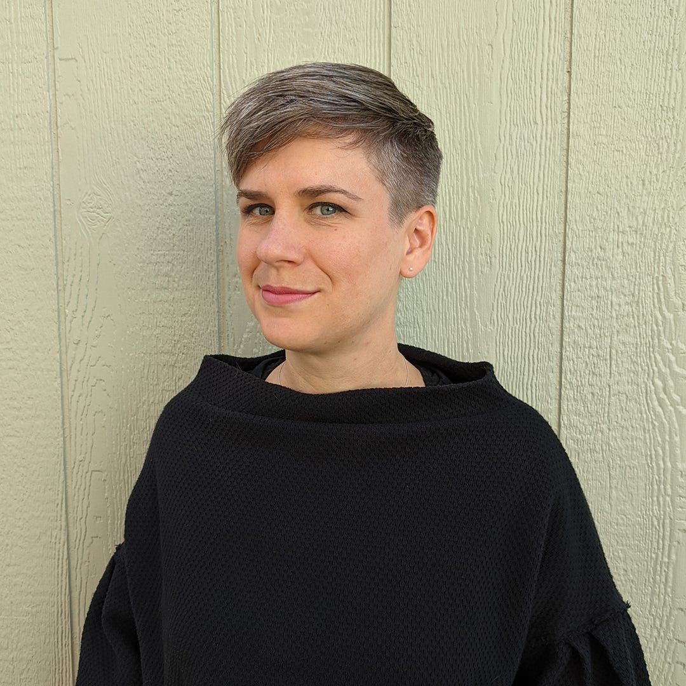
Kate Hollenbach
Saturday Oct 10, 10 AM–12 PM
Reflective Devices: a Drawing and Mail Art Workshop
This workshop invites participants to spend some offline time reflecting on labor in the AI era by drawing and producing a postcard as a piece of asynchronous physical media. Participants will draw a phone, laptop, device, or screenshot that is significant to their work as an artist, technologist, writer, or digital laborer. Drawing serves as a meditation: what labor is contained in our devices? What memories do our digital devices hold? How can we visually represent our labor and memories in our rendering of the device?
Together, we’ll reflect on these questions as we sketch a personal device or digital artifact to reflect on its form, textures, and significance in our lives. Our drawings will become the images for handmade postcards. To conclude the workshop, participants will write a letter to a friend or collaborator reflecting on their experiences and we’ll address and send the postcards.
Preparation: Participants are encouraged to bring an obsolescent or broken device to use as inspiration—or digital artifact such as a screenshot.
Kate Hollenbach (@kjhollen) is an artist, programmer, and educator based in San Francisco, California. She creates video and interactive works examining critical issues in user interface and user experience design, with a focus on user habits, data collection, and surveillance. She has taught creative coding and media arts as an Assistant Professor of Emergent Digital Practices at University of Denver and as a Professional Lecturer at DePaul University. She has presented and exhibited work in venues across the United States, including SFMOMA, SIGGRAPH, and INST-INT. Kate is currently Education Director at Gray Area Foundation for the Arts.
-
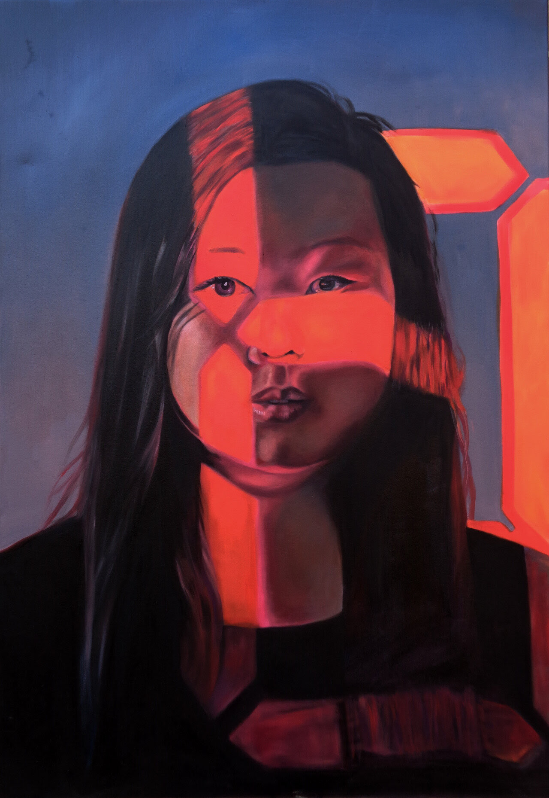
Diana Mulan Zhu
Saturday Oct 10, 11 AM–1 PM
Is Co-authorship a Luxury in a Time of Fascism: making films on nothing to navigate the economies of leisure, pleasure and urgency in sex work, political organizing and collaborative filmmaking.
What is the difference between using the arts in organizing and political art? This workshop muses on dilemmas of working with exploited, politically activated communities in crisis. How do we take the act of filmmaking collaboratively seriously if participants are genuinely so in crisis, their time and labor is at a breaking point—they can’t afford to spend the time to truly co-author a film? What does filmmaking really entail and how do we break it into its fundamental pieces, to make it as agile, scrappy, negotiable and modular, without resorting to “stunt” co-credits or misrepresenting labor and power relations in filmmaking and organizing. By borrowing from a recent project with erotic laborers, massage workers and migrant workers in active organizing and resistance, artist and scholar Diana Mulan Zhu will draw on dialectical behavioral therapy, software engineering, fluxus, and crip practices to guide a workshop on making films on smartphones in her “docufiction” approach, covering costume, set design, cinematography, lighting, editing, performance, graphics and sound.
Experience desired: This workshop is ideal for someone who has shot and edited moving image, film, video, media before but also open to those with no experience.
Preparation: Smartphone with storage space available of 3-5 GB, able to shoot in 4K; headphones for smartphone, notebook, download apps: Blackmagic Camera, CapCut (make accounts). Optional: tripod for smartphone.
Diana Mulan Zhu is a second-generation Chinese-American artist, filmmaker, technologist, and scholar whose work traces inherited trauma, cultural alienation, and the hypersexualized representation of Asian women across painting, video, performance, and installation. Using generative AI as both tool and critique, she interrogates techno-orientalism and the surveilled digital image. She holds an MFA from Stony Brook University and is a PhD student and Cota Robles Fellow in Film & Digital Media at UC Santa Cruz, and a DISCO / Future Histories Studio fellow. She has exhibited internationally, from Anthology Film Archives (New York) to Prisma Estudio (Lisbon).
-
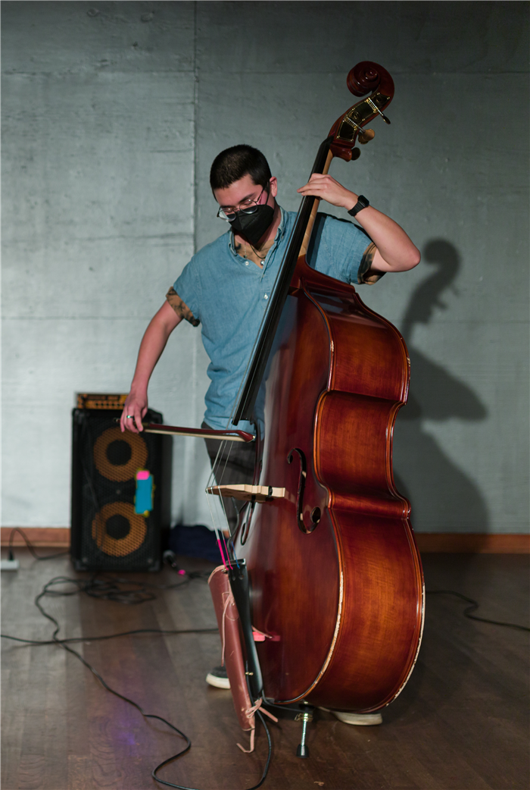
Kumi Maxson
Saturday Oct 10, 12–2 PM
Collective Improvisation Workshop
This workshop invites participants into collective improvisation, drawing on Kumi Maxson’s work as a performing artist and teacher to explore improvisation's role in political and social change.
Kumi Maxson is an experimental bassist (upright and electric) practicing within the jazz tradition, using composition and improvisation to explore a liberated sense of being through embodied practice. Based in Santa Cruz, they have facilitated multi-week collective-improvisation workshops at Indexical built around the role improvisation plays in political and social change: non-hierarchical spaces open to all levels of experience, including beginners. Their practice draws on lived experience to find pathways toward collective liberation.
-
Marianne Goldin
Saturday Oct 10, 3–5 PM
The Theatre of Abandoned Ideas
What does it cost to think together? Listening, explaining, and trusting take as long as they ever did, but the rest of the world is not waiting. This workshop explores ideas seen through the lens of time scarcity where collaboration becomes privilege. By unpacking the notion of the hurried handoffs via dimensions of labor and time inequalities (who gets to finish a thought? who can afford to be reasonable?), we progressively revive interrupted ideas, in the hopes of understanding whether the most vivid glimmer of a concept can survive an imposed context shift. Can we interrupt interruption itself? We will practice idea reconstitution inspired by arcane memory methods through provocations and group work.
Preparation: Recall one or two projects you abandoned and later recovered, and what brought each one back.
Marianne Goldin is the founder and executive director of Src Material, a US arts-and-technology nonprofit, and works as a software engineer. A contributing editor of This Week in Rust and co-author of Clean Code in Rust (Packt), she is fascinated by the interplays of traditional thought systems with contemporary technological ontologies. She is a convenor of Src's programming, including the Art in the Age of Allaboration track at SPAM 2026, around questions of labor, infrastructure, and collaboration in computational culture.
-
Art in the Age of Allaboration
Saturday Oct 10, 10 AM–5 PM
Src Material is convening artist-led talks, workshops, and activations that co-locate making and discussion via workshops and talks that surface the invisible context-rebuilding inherent in making and working today.
The connective tissue of modern creation has placed us into hubs of innately individualistic production, creating a new reality for collaboration: allaboration.
We define allaboration as a form of asymmetry between interlocutors:
Allaborate (v.): To perform labor in an isolated context with the intent of forcing a reaction or modification from a peer at a later time.
In allaboration, labor is performed in isolation and delivered to a peer who must complete it later, alone. We often experience such labor asymmetry as the norm in discursive work. One person spends ten seconds sending a comment to their teammate, who must spend two hours trying to reconstruct its impact. The one who receives the work of untangling carries a weight that no one is seen to have placed there. This is allaborative stress: exhaustion without known origin.
As we build new tools and practices in the arts, we must ask: how do we use these new forms of authorship to fix asymmetry, rather than reproducing exhaustion?
In a true collaboration, the burden of meaning is shared in the moment. Through this series, we hope to foment a discussion about how collaboration shows up for artists and creators today.
Artist talks
Doors at 1:30 PM, talks 2–5 PM
-
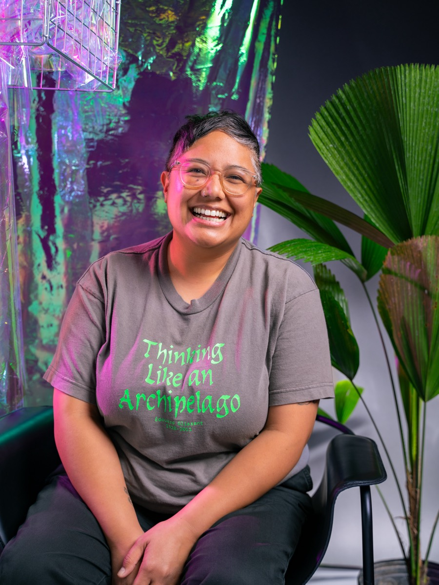
Dorothy R. Santos
Dorothy R. Santos, Ph.D. (she/they) is a Filipino-American writer, artist, and media scholar. She earned her Ph.D. in Film and Digital Media with a designated emphasis in Computational Media from the University of California, Santa Cruz. She is an Assistant Professor of Teaching focused on Art, Justice, and Digital Media in the Art Department and Core Faculty for the Creative Technologies program at the University of California, Santa Cruz.
Photo: Stephanie Seggara
-
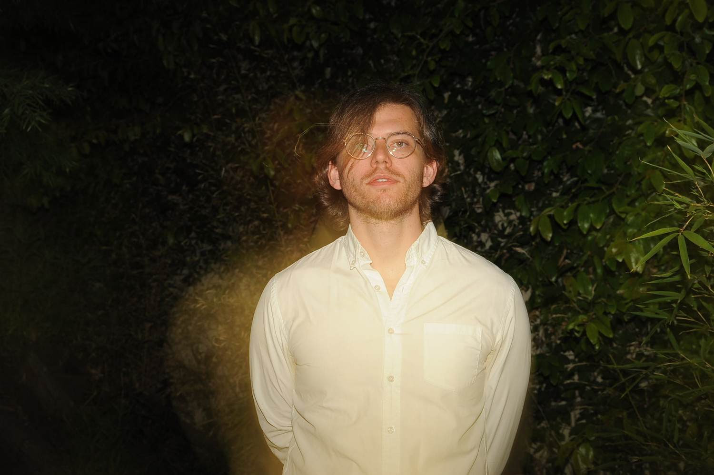
Nathan Corder
Distributed Minds, Distributed Music: Extended Cognition, Emergence, and the Labor of Composition
Nathan Corder is an Oakland-based composer and improviser working with electronics, objects, and programmatically generated music.. His work centers on emergent structures built through feedback and translational processes, physical computing, and improvisational strategies. His music has been programmed internationally: from the San Francisco Tape Music Festival and SEAMUS to EXHIBITRONIC (Strasbourg), MUSLAB (Mexico City), and Echofluxx (Czech Republic). He received the Elizabeth Mills Crothers Award (2018) and SEAMUS's Allen Strange Memorial Award (2014). As a composer-performer on custom electronics and guitar he has collaborated with Roscoe Mitchell, William Winant, and Jaap Blonk, and plays in the bands TONED, monopiece, and Mechanical Bull.
-
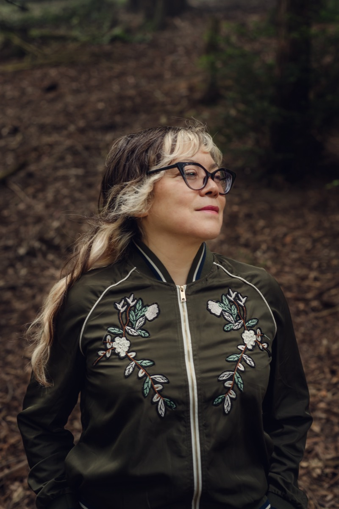
Jean Carla Rodea
The Archive is a Body
Rather than presenting a chronological review of my practice, this session investigates how memory is recorded, distorted, embodied, and reconstructed.
Jean Carla Rodea is an interdisciplinary artist with a research-based practice, originally from Mexico City and currently based between San Francisco, CA, and Brooklyn, NY. Their work spans music, sound, vocality, performance, poetry, photography, video, and sculpture, moving fluidly between solo projects and collaborative, cross-disciplinary environments. They draw from shifting identities, immigration, ritual, performance, ecology, construction work, and improvisation, engaging deeply with time-based media and the diverse spaces where these interactions take place.
A central focus of their practice is the exploration of critical socio-political issues, including the politics of the body, gender, memory, and imbalanced human relationships. They are particularly invested in how time is constructed through memory, and how those memories—whether embodied or embedded within spaces—are recorded, fragmented, and continually reconstructed. This investigation opens pathways for fiction and speculative dimensions to disrupt and challenge dominant narratives.
Archival research is a recurring methodology in their work, encompassing both institutional and personal archives. From these materials, they craft speculative histories, responding to documents, physical traces, and spaces. In their engagement with the archive, they embody multiple performative roles: witness, observer, participant, and researcher, each inhabiting the temporary sites where events unfold.
Photo: Lenny Gonzalez
-
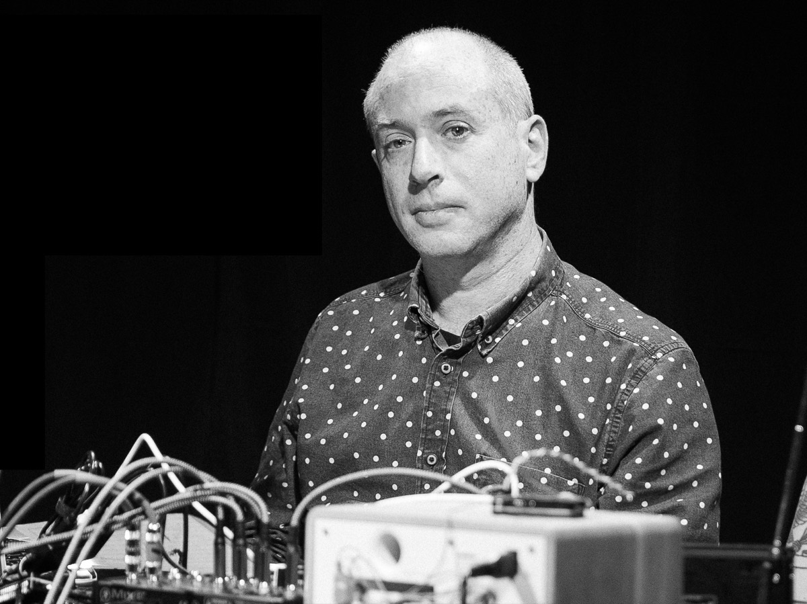
Abram Stern
Abram Stern, MFA, Ph.D. (they/he) is an artist and scholar whose work builds upon collections of government-produced media and metadata. They interrogate the material produced by public bureaucracies and the infrastructures that mediate our experiences of them. Their artwork has been exhibited at / (Slash), the Institute of Contemporary Art at Maine College of Art and Design, Real Art Ways, the Beall Center for Arts and Technology, Works|San Jose, and New Langton Arts.
Abram served as an education fellow for the Visualizing Abolition initiative at the Institute of Arts and Sciences at UC Santa Cruz, a public humanities fellow for The Humanities Institute, and a research fellow for the CITRIS Data and Democracy Institute. Their work has been published in Media-N: Journal of the New Media Caucus and Information Polity. Abram's projects and collaborations have been supported by funding from the Sunlight Foundation, the Knight Foundation, the National Science Foundation, the Mozilla Foundation, and the University of California Humanities Research Institute.
They hold a Ph.D. in Film and Digital Media from the University of California, Santa Cruz, a Master's in Fine Art of Digital Art and New Media, and a Bachelor of Fine Arts degree in Digital Media from the San Francisco Art Institute.
Performances
Doors at 8 PM, show 8:30–10:30 PM
-
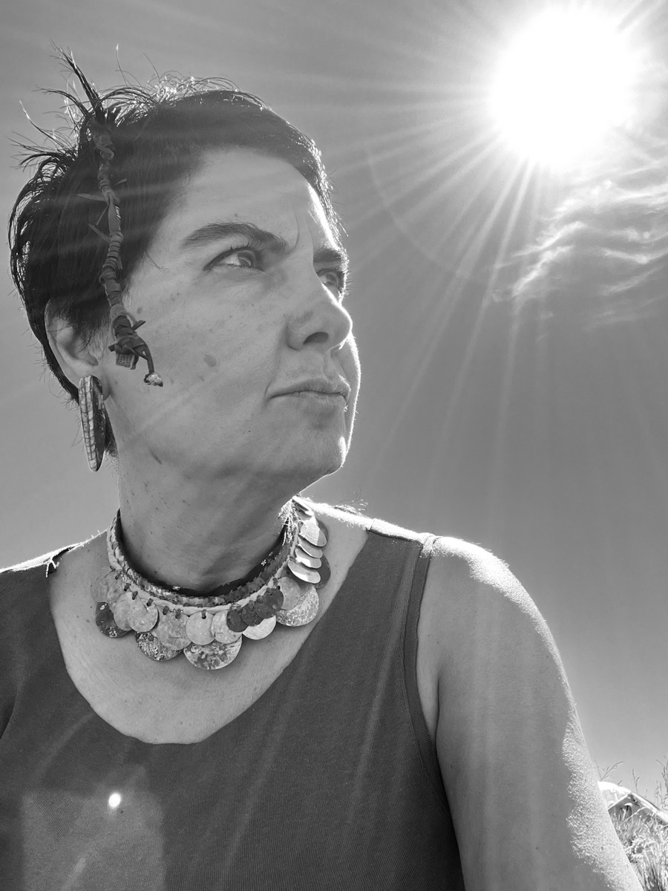
Ava Koohbor
Ava Koohbor works between sculpture and instrument, poetry and circuitry, memory and electronics, Tehran and San Francisco. Her practice explores sound as a field of relations, where listening, making, and material continually reorganize one another. Her work takes shape through instruments, performances, installations, exhibitions, and books. Her latest book, Of Flesh and Frequency: A Poetics of Sound Making, was published by Lithic Press in 2026.
-
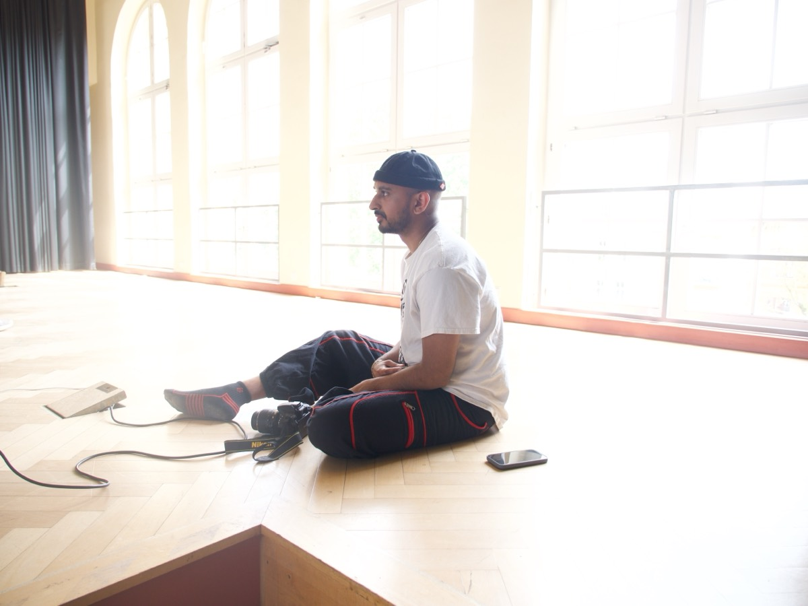
Rohan Chander
Rohan Chander is a media artist, electronic musician, and performance artist with an interest in recombinatory approaches to sound and aesthetic. Rooted in political and personal inquiry, he often draws from sample-based artforms, performance art, speculative fiction, and historical research. His work has been described as “hypersensory” (Washington Post), “remarkably alive” (The Wire Magazine), and of “transcendent metamorphosis” (I Care If You Listen). Under his solo DIY project BAKUDI SCREAM, he won the Gaudeamus Prize for Music Composition in 2022.
-
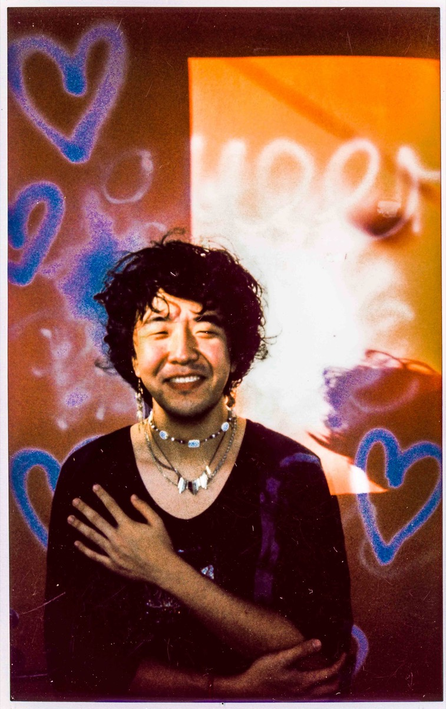
Scott Li
Scott Li is a NYC-based violinist, composer, producer, improviser, filmmaker, and electroacoustic sound artist blending the Romantic classical chamber music tradition with deeply emotive, boundary-pushing electronic music. Li's music is first and foremost epistolary—love letters to the world and the people around us, the memories we share, and the feelings we carry with us.
Hailed by The Crossfader as “one of the pioneers of the next generation's classical music”, Li's work fuses visceral string playing, modular synthesis, live processing, fixed media, film, photography, dance, and poetry with a classical chamber music sensibility to “create a simultaneous understanding of The Beautiful and The Sublime, while exhibiting unparalleled emotional induction.” Half of the newly formed “Warp Duo” with electroacoustic improviser Levi Lu, Li is an explorer of haunting and ethereal sounds and a collaborator of a diverse group of musicians, filmmakers, visual artists, poets, and dancers, with work ranging from modern pop production to full-blown experimental noise music.
Collaborations have included works premiered at New World Symphony's BLUE Project series in 2022, The University of Michigan's Dance Department alongside Vim Vigor Dance, as well as a commission from Pathos Percussion Trio. Li has performed at the Park Avenue Armory, Big Ears, New World Symphony Center in Miami, REDCAT, Dripping, the Jazz Gallery in NYC, Rhizome DC and internationally at A L'ARME! Festival and Cologne Jazz Fest, supporting bassoonist and composer Joy Guidry. Li currently works at the Juilliard School as a full-time recording engineer.
-
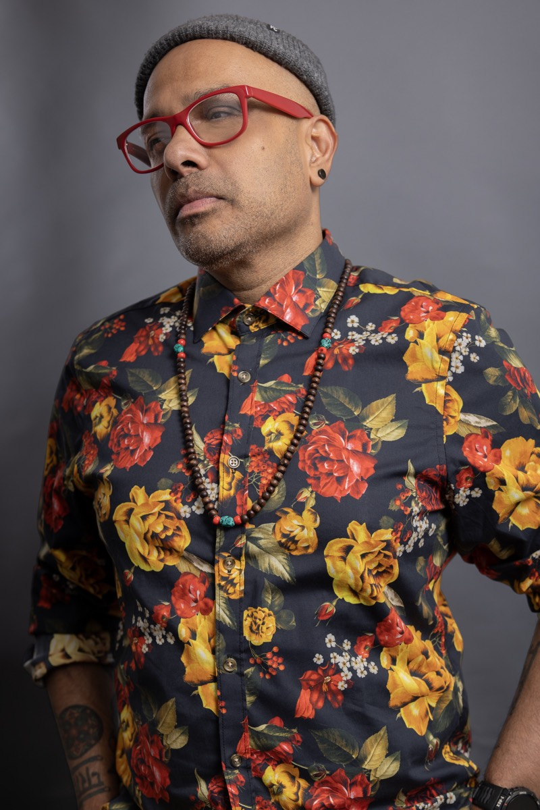
Sunken Cages
Sunken Cages is Indian-born drummer and electronic music producer Ravish Momin, who studied with US Jazz master-drummer Andrew Cyrille. He has worked as a sideman with a wide array of musicians including US Jazz legend Kalaparush Maurice McIntyre (AACM/Chicago) and pop star Shakira. In the past, he led Tarana, a shapeshifting global-Jazz group, on international and domestic stages for 14 years.
His current collaborative projects include ‘Turning Jewels Into Water’ (with Haitian electronic music pioneer Val Jeanty), a duo with dragonchild (Ethio-American saxophonist DA Mekonnen) and a trio with dancer Ishita Mili and video-artist Art Jones.
He has recently produced tracks with South African Gqom group Phelimuncasi (Nyege Nyege Records), saxophonist Maria Valencia (Meridian Brothers), producers Makossiri (Hakuna Kulala, Kenya), Saskia (QTV, Brazil), Kush Arora (Discrepant, US), Baba Sy (Jokkoo Collective, Spain/Senegal) and Rani Jambak (Indonesia, Yes No Wave). He has been commissioned for remixes by Depeche Mode, global electronic music producers Batida (Portugal), Babani Sound System (Mauritius), and Guedra Guedra (Morocco).
His recent performance highlights include the Free Forma Impulse Festival (Italy), AfroBanana Festival (Cyprus), Words/Beat/Life Festival (Kennedy Center's Millennium Stage), Big Ears Festival, LeGuessWho? Festival (NL), Positive Futures Festival (AT), Lincoln Center Outdoors Festival, Slingshot Festival and Festival Congedi (IT). He is also the recipient of grants from New Music USA, The Mid-Atlantic Arts Foundation, NYC Arts In Education Roundtable, Arts International, Meet The Composer and NYSCA.